Test results, package, configuration, data migrations, infrastructure definitions, release notes, and accepted risk.
Phase 05 · Release and production
Deployment
Promote an approved release through controlled environments, apply configuration and data changes, route production traffic, and confirm that the live service is healthy and recoverable.
At a glance
Deployment moves a verified product into real use.
An application environment includes the code or executable, libraries, middleware, operating system, networking, compute, memory, storage, and configuration needed to run the product. Deployment controls how a specific release enters one of those environments.
Provision resources, release the package, run smoke and health checks, monitor, and roll back when needed.
Deployed version, validated data changes, monitoring, runbook, release record, rollback path, and operations handoff.
Deployment workflow
Release with control and a way back
- Choose the approved versionIdentify the exact build, test evidence, configuration, infrastructure, database changes, release notes, and known issues included in the release.
- Prepare the target environmentProvision or update compute, network, storage, identity, secrets, observability, and other resources required by the application.
- Promote the releaseMove the same verified package through QA, staging, and production while applying environment-specific configuration separately.
- Apply controlled changesRun database migrations, update routes, and change infrastructure in an order that protects compatibility and data.
- Verify and observeUse smoke tests and health checks to confirm basic service operation, then watch logs, metrics, errors, traffic, and resource use.
- Complete or roll backContinue when exit conditions pass; otherwise return to the last known good state and record what happened.
Application environments
Four destinations with different purposes
| Environment | Purpose | Typical users |
|---|---|---|
| Development | Actively writing, changing, and locally checking the application. | Developers. |
| QA / Testing | Testing components and finding defects under controlled conditions. | Quality assurance team and automation. |
| Staging | Closely reproducing production for final integrated validation. | Internal teams, testers, release owners, and stakeholders. |
| Production | Running the live application for general use. | End users and operators. |
Pre-production refers to Development, QA / Testing, and Staging. Production must handle real load while meeting security, reliability, and scalability expectations.
Infrastructure ownership
On-premises and three cloud models
- On-premisesThe organization runs the application and infrastructure at its own physical location and manages the hardware, system, maintenance, and data directly.
- Public cloudA provider owns shared infrastructure that organizations access over the internet; it is commonly chosen for scalability and cost advantages.
- Private cloudCloud infrastructure is reserved for one organization, providing more customization and isolation while requiring more resources.
- Hybrid cloudPublic and private cloud environments work together to balance cost, control, security, scalability, and flexibility.
Typical n-tier production path
Specialized components divide responsibility.
| Component | Primary purpose |
|---|---|
| Firewall | Monitors network traffic and permits or blocks data according to security rules. |
| Load balancer | Distributes incoming requests across available servers so one server does not receive all the work. |
| Web server | Responds to HTTP requests and delivers web pages, files, images, and video. |
| Application server | Executes business logic and connects user activity with server-side behavior and data. |
| Proxy server | Acts as an intermediary for routing, caching, load balancing, privacy, security, or optimization. |
| Database server | Stores application data and uses a database management system to control access and modification. |
| High-availability replica | Maintains another copy of data or service capacity so operation can continue if the primary fails. |
Fit the architecture to the need: not every system requires every component or a separate server for each tier. Complexity should be justified by scale, risk, performance, security, and reliability requirements.
Production request path
The existing project diagram traces a user request through security, routing, web content, business logic, and data storage.


Release stages
Widen the audience as confidence grows.
- AlphaThe first functioning version shared with selected stakeholders. It may be incomplete, contain errors, and still undergo design changes.
- Beta or limited releaseA functionally complete version used outside the development organization under real conditions, even though known defects may remain.
- General availabilityThe stable version released to all intended users after agreed beta changes have been implemented and tested.
Plain-language terminology
Terms used in Deployment
- Application environment
- The complete hardware and software context needed to run an application.
- Pre-production
- Any environment used before the live Production environment, including Development, QA, and Staging.
- Production
- The live environment that serves real users and business activity.
- Provisioning
- Creating or configuring the compute, network, storage, identities, and services needed by an application.
- Promotion
- Moving the same approved release into the next controlled environment.
- Smoke test
- A small set of fast checks that confirms the most basic functions work after deployment.
- Health check
- An automated check that reports whether a running service can respond and its dependencies are usable.
- Rollback
- Returning to the last known good version or state after a failed or unsafe release.
- n-tier architecture
- An architecture that separates presentation, web processing, application logic, and data responsibilities into tiers.
- HTTP
- Hypertext Transfer Protocol, the common protocol browsers and web services use to exchange requests and responses.
- Server farm
- A group of servers that share incoming work.
- DBMS
- Database management system: software that controls how applications and users store, retrieve, and modify database data.
- Load
- The traffic and work a running system must handle.
- Availability
- The degree to which a service is reachable and usable when it is needed.
- Runbook
- Step-by-step operational instructions for deploying, monitoring, recovering, or responding to known situations.
- Release candidate
- A build intended for release if final validation does not find a blocking issue.
Source note
Deployment content combines the repository’s notes on environments, production components, and release stages.